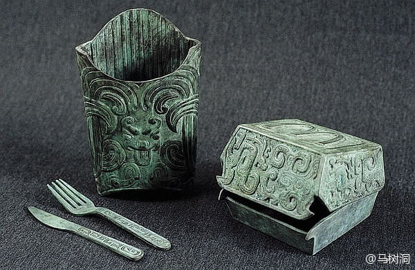

//@djvu9: //@马伯庸: 从形制上看，右边这件是周代云雷纹无铭汉堡簠，但口外不侈，有盖无足，侧口合范痕迹明显；中间那件是丰羊阔面阔薯条甑，衬有蕉叶棱脊。左侧两器均为长柄平准锐器，一体铸成。这四件器物锈蚀偏薄浮，层次感弱，表皮锈结处无光泽，应该不是老锈。西周时吃汉堡薯条，不配刀叉。所以@马褂爱天文:都在秀古董！？我也秀秀我的珍藏：这是2010年我去陕西玩儿的时候从一个农民家里淘的，据说是西周时期的青铜器。请@马伯庸 亲王点评 